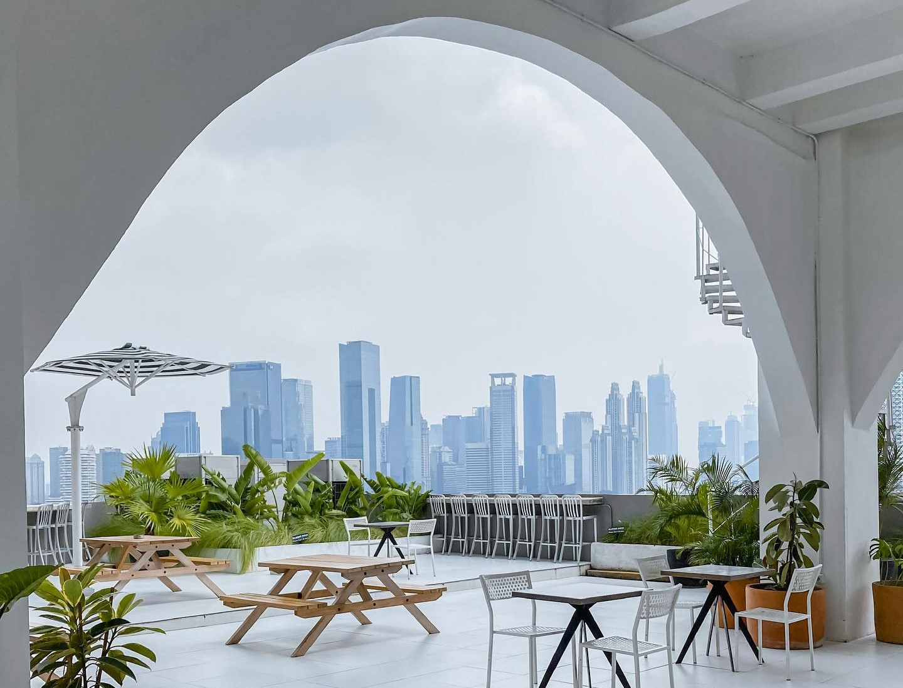
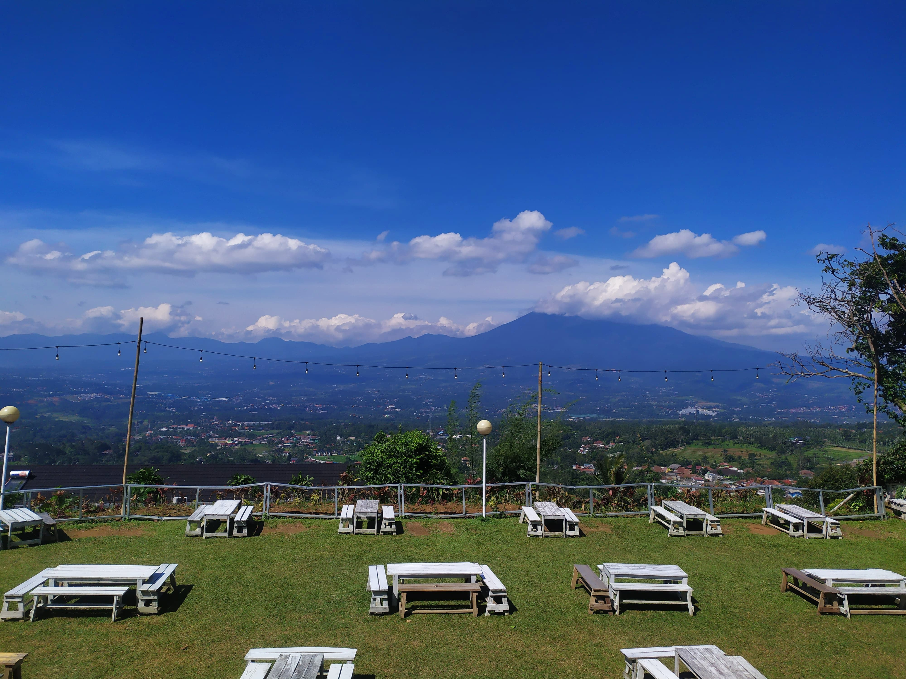
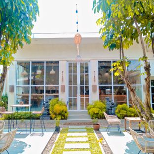

Rekomendasi Tempat nongkrong Hidden Gem tapi Cozy abis!

Halo Guys! kali ini aku mau rekomendasiin tempat nongkrong hidden gem tapi cozy abis nih. Lets Go!!!
Sekarang ini lagi viral dan hype banget kan kafe-kafe yang menawarkan berbagai macam keunikannya, seperti tempatnya yang instagramable,
harganya yang murah, makanan dan minumannya yang good taste, atau lokasinya yang terpencil dan lain-lain. Tentu hal ini bakal menarik semua kalangan khususnya para
muda-mudi yang lagi eksis buat berkunjung ke kafe-kafe tersebut. Apalagi sekarang sedang zamannya orang-orang berlomba-lomba membuat
konten terkait hal-hal yang menarik agar akun sosial medai mereka ramai dikunjungi orang juga. Dan faktor lainnya pasti kita pribadi
juga butuh banget nih asupan suasana yang enak dipandang mata untuk sekedar bersantai ataupun berbincang dengan keluarga, teman maupun
pasangan atau rekan-rekan kerja. Nah disini aku akan ngerekomendasiin ke kalian kafe hidden gem yang super cozy, check it out!
1. Caffe Kobain

Cafe ini berada di daerah Kuningan, Jakarta selatan nih, yaitu tepatnya di atas Mall Kuningan City. Kafe ini menawarkan view yang
keren banget, karena kalian bisa melihat gedung-gedung di Jakarta Selatan, menikmati sunset dan juga citylightnya loh!. Mereka
juga mengadakan livemusic dari sore hingga malam hari. Untuk harga menu masih bisa dibilang standar untuk di wilayah perkantoran
Jakarta. Dan jangan lupa untuk menyiapkan uang di E-Wallet kamu ya, karena pemesanan disini sudah melalui virtual semua. Nah untuk
bisa sampai di kafe ini kamu bisa datang ke mall kuningan city naik lift hingga ke P6, lalu berjalan kaki ke P7. Untuk lebih lengkapnya
kalian bisa mengunjungi website
ini.
2. Kedai Kopi Abdi

Kedai kopi abdi ini terletak di daerah Bogor tepatnya di kecamatan cijeruk kabupaten Bogor. Disini kalian bisa menikmati makanan
atau minuman, sambil melihat view alam yang menyegarkan mata. Kita juga bisa menikmati city light bogor disini sambil mendengarkan
live musik. Untuk harga menu yang ditawarkan terbilang sangat murah mulai dari Rp 5000 aja. Tempat yang disediakan ada indoor dan
outdoor, jadi kalian ga perlu khawatir kalo tiba-tiba hujan. Dengan udara yang sejuk dan suasana yang tenang dan jauh dari segala
hiruk pikuk, dijamin deh kalian gak bakal bosan disini.
Lihat lokasi
disini.
3. La Nuna Cafe & Resto

Cafe hidden gem ini terletak di daerah tangerang nih guys, tepatnya di Jl. Duren II , Karang Tengah, Tangerang. Cafe ini menawarkan
banyak spot instagramable yang coock banget buat kamu yang suka berswafoto. Tidak hanya menyuguhkan tempat yang bagus, cafe ini juga
menyediakan makanan dan minuman dengan rasa yang tak kalah enak. Mereka juga menyediakan tempat indoor maupun outdoor, dan untuk
tempat yang berada di outdoor kalian ga perlu takut kepanasan, karena banyak pohon-pohon yang menutupi dan membuat udaranya sejuk.
Lihat lokasi
disini.
Nah itulah beberapa rekomendasi tempat nongkrong yang bisa jadi referensi tujuan nongkrong kamu berikutnya, semoga bermanfaat ya.
Happy Holliday!!!